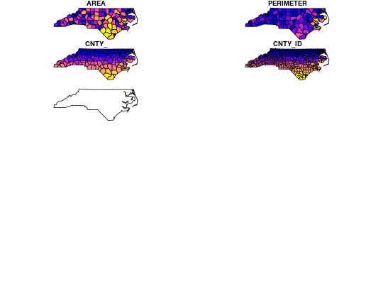
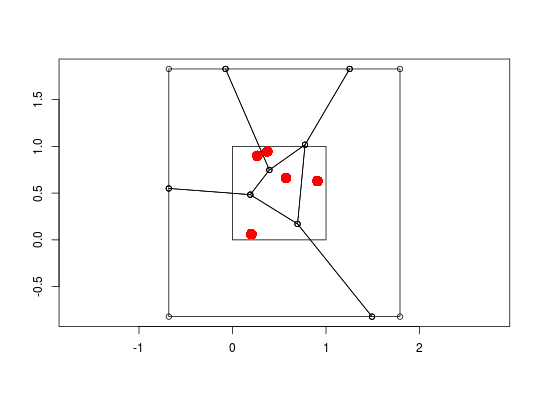

Geometric operations on (pairs of) simple feature geometry sets
Geometric operations on (pairs of) simple feature geometry sets
st_is_valid(x, NA_on_exception = TRUE, reason = FALSE) st_dimension(x, NA_if_empty = TRUE) st_area(x) st_length(x, dist_fun = geosphere::distGeo) st_is_simple(x) st_distance(x, y, dist_fun) st_relate(x, y) st_intersects(x, y, sparse = TRUE, prepared = TRUE) st_disjoint(x, y, sparse = TRUE, prepared = TRUE) st_touches(x, y, sparse = TRUE, prepared = TRUE) st_crosses(x, y, sparse = TRUE, prepared = TRUE) st_within(x, y, sparse = TRUE, prepared = TRUE) st_contains(x, y, sparse = TRUE, prepared = TRUE) st_contains_properly(x, y, sparse = TRUE, prepared = TRUE) st_overlaps(x, y, sparse = TRUE, prepared = TRUE) st_equals(x, y, sparse = TRUE, prepared = FALSE) st_covers(x, y, sparse = TRUE, prepared = TRUE) st_covered_by(x, y, sparse = TRUE, prepared = TRUE) st_equals_exact(x, y, par, sparse = TRUE, prepared = FALSE) st_buffer(x, dist, nQuadSegs = 30) st_boundary(x) st_convex_hull(x) st_simplify(x, preserveTopology = FALSE, dTolerance = 0) st_triangulate(x, dTolerance = 0, bOnlyEdges = FALSE) st_voronoi(x, envelope, dTolerance = 0, bOnlyEdges = FALSE) st_polygonize(x) st_line_merge(x) st_centroid(x) st_segmentize(x, dfMaxLength, ...) st_combine(x) st_intersection(x, y) st_difference(x, y) st_sym_difference(x, y) st_union(x, y, ..., by_feature = FALSE) st_line_sample(x, n, density, type = "regular")
Arguments
| x | object of class |
|---|---|
| NA_on_exception | logical; if TRUE, for polygons that would otherwise raise an GEOS error (e.g. for a polygon having more than zero but less than 4 points) return an |
| reason | logical; if |
| NA_if_empty | logical; if TRUE, return NA for empty geometries |
| dist_fun | function to be used for great circle distances of geographical coordinates; for unprojected (long/lat) data, this should be a distance function of package geosphere, or compatible to that; it defaults to distGeo in that case; for other data metric lengths are computed. |
| y | object of class |
| sparse | logical; should a sparse matrix be returned (TRUE) or a dense matrix? |
| prepared | logical; prepare geometry for x, before looping over y? |
| par | numeric; parameter used for "equals_exact" (margin) and "is_within_distance" |
| dist | numeric; buffer distance for all, or for each of the elements in |
| nQuadSegs | integer; number of segments per quadrant (fourth of a circle) |
| preserveTopology | logical; carry out topology preserving simplification? |
| dTolerance | numeric; tolerance parameter |
| bOnlyEdges | logical; if TRUE, return lines, else return polygons |
| envelope | object of class |
| dfMaxLength | numeric; max length of a line segment. If |
| ... | ignored |
| by_feature | logical; if TRUE, union each feature, if FALSE return a single feature with the union the set of features |
| n | integer; number of points to choose per geometry; if missing, n will be computed as |
| density | numeric; density (points per distance unit) of the sampling, possibly a vector of length equal to the number of features (otherwise recycled). |
| type | character; indicate the sampling type, either "regular" or "random" |
Value
matrix (sparse or dense); if dense: of type character for relate, numeric for distance, and logical for all others; matrix has dimension x by y; if sparse (only possible for those who return logical in case of dense): return list of length length(x) with indices of the TRUE values for matching y.
st_dimension returns 0 for points, 1 for lines, 2 for surfaces; if NA_if_empty is TRUE return NA for empty geometries.
st_area returns the area of a geometry, in the coordinate reference system used; in case x is in degrees longitude/latitude, areaPolygon is used for area calculation.
st_length returns the length of a LINESTRING or MULTILINESTRING geometry, using the coordinate reference system used; if the coordinate reference system of x was set, the returned value has a unit of measurement. POINT or MULTIPOINT geometries return zero, POLYGON or MULTIPOLYGON are converted into LINESTRING or MULTILINESTRING, respectively.
st_is_simple and st_is_valid return a logical vector
st_distance returns a dense numeric matrix of dimension length(x) by length(y)
st_relate returns a dense character matrix; element [i,j] has nine characters, refering to the DE9-IM relationship between x[i] and y[j], encoded as IxIy,IxBy,IxEy,BxIy,BxBy,BxEy,ExIy,ExBy,ExEy where I refers to interior, B to boundary, and E to exterior, and e.g. BxIy the dimensionality of the intersection of the the boundary of x[i] and the interior of y[j], which is one of 0,1,2,F, digits denoting dimensionality, F denoting not intersecting.
functions st_intersects up to st_equals_exact return a sparse or dense logical matrix with rows and columns corresponding to the number of geometries (or rows) in x and y, respectively
st_buffer, st_boundary, st_convex_hull, st_simplify,
st_triangulate, st_voronoi, st_polygonize, st_line_merge,
st_centroid and st_segmentize return an sfc or an sf
object with the same number of geometries as in x
All functions (or methods) returning a geometry return an object of the same class as that of the first argument (x). st_intersection, st_union, st_difference and st_sym_difference return the non-empty geometries resulting from applying the operation to all geometry pairs in x and y, and return an object of class sfg, sfc or sf, where in the latter case the matching attributes of the original object(s) are added. The sfc geometry list-column returned carries an attribute idx, which is an n x 2 matrix with every row the index of the corresponding entries of x and y, respectively. st_union has in addition the ability to work on a single argument x (y missing): in this case, if by_feature is FALSE all geometries are unioned together and an sfg or single-geometry sfc object is returned, if by_feature is TRUE each feature geometry is unioned; this can for instance be used to resolve internal boundaries after polygons were combined using st_combine.
st_union(x) unions geometries. Unioning a set of overlapping polygons has the effect of merging the areas (i.e. the same effect as iteratively unioning all individual polygons together). Unioning a set of LineStrings has the effect of fully noding and dissolving the input linework. In this context "fully noded" means that there will be a node or endpoint in the output for every endpoint or line segment crossing in the input. "Dissolved" means that any duplicate (e.g. coincident) line segments or portions of line segments will be reduced to a single line segment in the output. Unioning a set of Points has the effect of merging al identical points (producing a set with no duplicates).
Details
function dist_fun should follow the pattern of the distance function distGeo: the first two arguments must be 2-column point matrices, the third the semi major axis (radius, in m), the third the ellipsoid flattening.
`st_contains_properly(A,B)` is true if A intersects B's interior, but not its edges or exterior; A contains A, but A does not properly contain A.
st_triangulate requires GEOS version 3.4 or above
st_voronoi requires GEOS version 3.4 or above
in case of st_polygonize, x must be an object of class LINESTRING or MULTILINESTRING, or an sfc geometry list-column object containing these
in case of st_line_merge, x must be an object of class MULTILINESTRING, or an sfc geometry list-column object containing these
st_combine combines geometries without resolving borders, using c.sfg; see st_union for resolving boundaries.
Examples
#> Warning: Self-intersection at or near point 5 5#> [1] FALSE#> Warning: Self-intersection at or near point 5 5#> [1] "Valid Geometry" "Self-intersection[5 5]"x = st_sfc( st_point(0:1), st_linestring(rbind(c(0,0),c(1,1))), st_polygon(list(rbind(c(0,0),c(1,0),c(0,1),c(0,0)))), st_multipoint(), st_linestring(), st_geometrycollection()) st_dimension(x)#> [1] 0 1 2 NA NA NAst_dimension(x, FALSE)#> [1] 0 1 2 0 1 0dist_vincenty = function(p1, p2, a, f) geosphere::distVincentyEllipsoid(p1, p2, a, a * (1-f), f) line = st_sfc(st_linestring(rbind(c(30,30), c(40,40))), crs = 4326) st_length(line)#> 1434649 mst_length(line, dist_fun = dist_vincenty)#> 1434649 mp1 = st_point(c(0,0)) p2 = st_point(c(2,2)) pol1 = st_polygon(list(rbind(c(0,0),c(1,0),c(1,1),c(0,1),c(0,0)))) - 0.5 pol2 = pol1 + 1 pol3 = pol1 + 2 st_relate(st_sfc(p1, p2), st_sfc(pol1, pol2, pol3))#> [,1] [,2] [,3] #> [1,] "0FFFFF212" "FF0FFF212" "FF0FFF212" #> [2,] "FF0FFF212" "FF0FFF212" "0FFFFF212"#> Reading layer `nc' from data source `/home/edzer/git/sfr/inst/shape/nc.shp' using driver `ESRI Shapefile' #> converted into: POLYGON #> Simple feature collection with 100 features and 14 fields #> geometry type: MULTIPOLYGON #> dimension: XY #> bbox: xmin: -84.32385 ymin: 33.88199 xmax: -75.45698 ymax: 36.58965 #> epsg (SRID): 4267 #> proj4string: +proj=longlat +datum=NAD27 +no_defs#> Warning: plotting the first 10 out of 14 attributes; use max.plot = 14 to plot all#> Warning: plotting the first 10 out of 14 attributes; use max.plot = 14 to plot allset.seed(1) x = st_multipoint(matrix(runif(10),,2)) box = st_polygon(list(rbind(c(0,0),c(1,0),c(1,1),c(0,1),c(0,0)))) if (sf_extSoftVersion()["GEOS"] >= "3.5.0") { v = st_sfc(st_voronoi(x, st_sfc(box))) plot(v, col = 0, border = 1, axes = TRUE) plot(box, add = TRUE, col = 0, border = 1) # a larger box is returned, as documented plot(x, add = TRUE, col = 'red', cex=2, pch=16) plot(st_intersection(st_cast(v), box)) # clip to smaller box plot(x, add = TRUE, col = 'red', cex=2, pch=16) }#> Geometry set for 1 feature #> geometry type: GEOMETRYCOLLECTION #> dimension: XY #> bbox: xmin: 0 ymin: 0 xmax: 1 ymax: 1 #> epsg (SRID): NA #> proj4string: NA#>mls = st_multilinestring(list(rbind(c(0,0), c(1,1)), rbind(c(2,0), c(1,1)))) st_line_merge(st_sfc(mls))#> Geometry set for 1 feature #> geometry type: LINESTRING #> dimension: XY #> bbox: xmin: 0 ymin: 0 xmax: 2 ymax: 1 #> epsg (SRID): NA #> proj4string: NA#>#> Warning: plotting the first 10 out of 14 attributes; use max.plot = 14 to plot all#> Warning: st_centroid does not give correct centroids for longitude/latitude datast_combine(nc)#> Geometry set for 1 feature #> geometry type: MULTIPOLYGON #> dimension: XY #> bbox: xmin: -84.32385 ymin: 33.88199 xmax: -75.45698 ymax: 36.58965 #> epsg (SRID): 4267 #> proj4string: +proj=longlat +datum=NAD27 +no_defs#>ls = st_sfc(st_linestring(rbind(c(0,0),c(0,1))), st_linestring(rbind(c(0,0),c(10,0)))) st_line_sample(ls, density = 1)#> Geometry set for 2 features #> geometry type: MULTIPOINT #> dimension: XY #> bbox: xmin: 0 ymin: 0 xmax: 9.5 ymax: 0.5 #> epsg (SRID): NA #> proj4string: NA#>#>ls = st_sfc(st_linestring(rbind(c(0,0),c(0,1))), st_linestring(rbind(c(0,0),c(.1,0))), crs = 4326) try(st_line_sample(ls, density = 1/1000)) # error st_line_sample(st_transform(ls, 3857), n = 5) # five points for each line#> Geometry set for 2 features #> geometry type: MULTIPOINT #> dimension: XY #> bbox: xmin: 0 ymin: -7.081155e-10 xmax: 10018.75 ymax: 100192.6 #> epsg (SRID): 3857 #> proj4string: +proj=merc +a=6378137 +b=6378137 +lat_ts=0.0 +lon_0=0.0 +x_0=0.0 +y_0=0 +k=1.0 +units=m +nadgrids=@null +wktext +no_defs#>#>#> Geometry set for 2 features #> geometry type: MULTIPOINT #> dimension: XY #> bbox: xmin: 0 ymin: -7.081155e-10 xmax: 9276.624 ymax: 55662.57 #> epsg (SRID): 3857 #> proj4string: +proj=merc +a=6378137 +b=6378137 +lat_ts=0.0 +lon_0=0.0 +x_0=0.0 +y_0=0 +k=1.0 +units=m +nadgrids=@null +wktext +no_defs#>#>#> Geometry set for 2 features #> geometry type: MULTIPOINT #> dimension: XY #> bbox: xmin: 0 ymin: -7.081155e-10 xmax: 10625.95 ymax: 110823.7 #> epsg (SRID): 3857 #> proj4string: +proj=merc +a=6378137 +b=6378137 +lat_ts=0.0 +lon_0=0.0 +x_0=0.0 +y_0=0 +k=1.0 +units=m +nadgrids=@null +wktext +no_defs#>#>#> Geometry set for 2 features #> geometry type: MULTIPOINT #> dimension: XY #> bbox: xmin: 0 ymin: -7.081155e-10 xmax: 5565.975 ymax: 110823.7 #> epsg (SRID): 3857 #> proj4string: +proj=merc +a=6378137 +b=6378137 +lat_ts=0.0 +lon_0=0.0 +x_0=0.0 +y_0=0 +k=1.0 +units=m +nadgrids=@null +wktext +no_defs#>#>